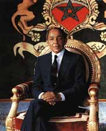

Le Roi HASSAN II
(1929-1999)
- Né le 9 juillet 1929 à Rabat, au Maroc
- Chef d'état-major des Forces Armées royales (12 mai 1956-23 juillet 1999)
- Prince héritier (9 juillet 1957-26 février 1961)
- Roi du Maroc (3 mars 1961-23 juillet 1999)
- Commandeur des croyants et chef suprême des Forces Armées royales (7 décembre 1962-23 juillet 1999)
- Chef du gouvernement (26 février 1961-13 novembre 1963 / 7 juin 1965-7 juillet 1967)
- Décédé le 23 juillet 1999 à Rabat, au Maroc
Fonctions et responsabilités:
-
Travailler aux côtés de son père en tant que conseiller politique, en particulier après sa nomination comme prince héritier en 1957 en raison de son programme de composition et de sa culture large et généreuse qu'il connaissait depuis son enfance, n'ayant assisté qu'après l'âge de quatorze ans à la rencontre historique entre son père et le président américain Roosevelt et le Premier ministre britannique Churchill à Casablanca en 1943. Il participe aux négociations de février 1956 sur l'indépendance du Maroc, et son père le nomme Commandant en chef et chef d'état-major des Forces armées royales, et en 1960, il devient ministre de la Défense. Il a occupé le trône du royaume du Maroc de mars 1961 au 23 juillet 1999, et pendant ses 38 années au pouvoir, il a dirigé le Maroc.
-
Il a fait passer le Maroc à une nouvelle étape de modernisation et de développement urbain, et a cherché à l'unir en travaillant à la récupération du Sahara occidental du colonialisme espagnol après avoir organisé ce qu'on a déclenché un soulèvement populaire majeur, surtout après que le colonisateur français a nommé Ibn Arafah roi du Maroc.
La soi-disant "révolution du roi et du peuple" a incité les autorités de protection à mettre fin à la phase d'exil du roi Mohammed V et de son prince héritier et à leur retour d'exil au Maroc.
Après la mort de son père, il prend le pouvoir le 3 mars 1961 dans un contexte international attiré par les camps de l'Ouest et de l'Est.
Il rejetait la politique du parti unique, mais vivait en conflit avec les partis et courants politiques, en particulier l'opposition de gauche, et la relation avec eux variait entre les marées, et cherchait à créer un équilibre à travers des partis qualifiés d '"administratifs" selon l'opposition, fondés par des personnalités politiques calculées sur le courant libéral et de droite. entatives d'assassinat:
Au cours de son règne, le roi Hassan II a fait l'objet de plusieurs tentatives d'assassinat, dont la plus célèbre a été la tentative "Skhirat" près de la capitale Rabat en 1971, puis l'accident d'avion en 1972.
-
Hassan II est décédé le vendredi 23 juillet 1999 à Rabat d'une grave crise cardiaque. Les funérailles ont réuni des dirigeants mondiaux et des représentants de plus de soixante pays.